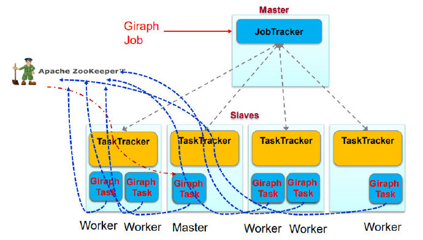

图数据系统
- 使用单机的图算法库，再实现分布式算法
- 通用性不好
- 并行图计算系统
- 对大规模分布式系统容错没有很好的支持
- 现有分布式数据处理系统进行图计算
- 编程麻烦/未对迭代进行优化/编程模型不够直观
Pregel
利用MapReduce框架/不是基于MapReduce API计算
图算法共性：顶点给顶点给邻居传递消息，不断进行更新，此过程迭代，直到最终收敛
- 集中式算法:限制参与运算的顶点，例如 Dijkstra总是挑最近的顶点加入source
- 分布式算法:所有顶点同时参与运算
BSP Model
一系列全局超步（superstep）
- 局部计算：每个参与的处理器独立计算（不依赖其他节点）
- 通讯：处理器群相互交换数据（顶点间数据交换）
- 栅栏同步(Barrier Synchronization)：等到其他所有处理器完成计算，再继续下一个超步（可使用zookeeper）
Vertex-centric计算模型
- “边”并不是核心对象，在边上面不会运行计算，只有顶点才会执行用户自定义函数进行相应计算
- 顶点的状态
- 活跃active：该顶点参与当前的计算
- 非活跃inactive：该顶点不执行计算，除非被其他顶点发来的消息激活
- 当一个非活跃状态的顶点收到来自其他顶点的消息时，Pregel计算框架根据条件判断是否将其显式唤醒进入活跃状态
- 什么时候结束
- 当所有顶点都是非活跃状态的时候，并且没有消息在传递
编程模型
Compute()：计算函数
SendMessageTo()：消息传递给哪些节点
Combiner()：可选，往同一个顶点的多个消息合并成一个，减少了传输和缓存的开销
Aggregator()：可选，一种全局通信/监控和数据查看的机制，该数据所有节点都可以见，例如PageRank中的N值/求图中的边数
VoteToHalt()：进入非活跃状态
体系结构
- Master：协调各个Worker执行任务，对外服务，协调计算（同步控制）
- Master维护的数据信息大小，只与分区的数量有关，与顶点和边的数量无关
- Worker：维护图的状态信息，负责计算（一个woker有多个节点），
- BSP计算模型
- 计算：worker自身
- 通讯：worker之间
- 同步：master
Worker内部
- 维护图顶点的描述信息（相邻顶点/边的长度），保存在内存中！
- 执行图顶点上的计算：Compute()
- 管理图顶点的控制信息
- 需要存两份（接收的队列，发送的队列）！
- 输入消息队列：接收到、发送给顶点的消息，
- S已经接收到的消息（来自于S-1），S中需要处理
- S中接收到来自其他Worker的消息，S+1处理
- 标志位：用来标记顶点是否活跃状态
- S中标记顶点是否活跃
- S中记录顶点在S+1是否活跃
Worker之间
- 消息传输：SendMessageTo()
- 发送消息前会首先判断目标顶点U是否位于本地（根据内部描述信息），若在远程，使用partition function确定在哪个节点
- 本地：直接把消息放入到与目标顶点U对应的输入消息队列中
- 远程：暂时缓存消息到本地输出消息队列，当缓存中的消息数目达到阈值时，传输到目标顶点所在的Worker上
- 若存在用户自定义的Combiner操作，则消息被加入到输出队列或者到达输入队列时，就可以对消息执行合并操作
MapReduce与Giraph

- Giraph的主从结构在MapReduce中都是Map Task
- 利用zookeeper选主
- 只利用了MapReduce中的mapper节点，没有Reduce节点
- 只是利用了MapReduce框架Run函数将Giraph启动
数据加载
Master：只需要知道图的位置
- 将输入的图划分为多个部分，为每个Worker分配一部分数据
Worker：实际读取数据到内存
超步结束
在执行过程中，顶点可以对外发送消息，但必须在本超步结束之前完成
超步完成后，Worker把在下一个超步还处于“活跃”状态的顶点数量报告给Master
- 这里可以使用Aggregator函数执行
容错机制
不能使用MapReduce的容错机制
检查点机制
Master故障用zookeeper恢复
Worker发生故障：使用检查点机制
- Pregel
- 重新启动一个Worker
- 局部恢复（confined recover）
- 将失效节点从检查点恢复到当前时刻
- Giraph
- Master把失效Worker的分区分配到其他处于正常状态的Worker上
- 全局恢复，所有节点退回到检查点
乐观容错
不一定需要检查点
KEYS
- BSP Model
- Vertex-centric计算模型/什么时候算法结束？
- Pregel不是基于MapReduce API计算
- 图算法共性
- Aggregator（）的应用？（worker汇报活跃顶点数量）
- worker保存什么信息？保存在哪里？保存几分？
- pregel图处理的数据结构更像临接链表
- Master节点维护什么信息？大小与什么有关？
- Pregel与MapReduce的关系
- Hama是基于MapReduce API，与Giraph不同
- Worker是线程执行
- Giraph迭代结果保存在哪？（内存）
- Giraph的容错机制可以使用MapReduce吗？
- Map Task仅用于启动Giraph Worker，并非执行map()函数
- 如果类似mapreduce那样在map()计算结束时 写入磁盘，那么Giraph的计算也已经结束了
- 如果每个superstep像map那样写磁盘（本地），那么得到的是本地的备份
- 会画Pregel图基本算法的流程图（单源最短路径/二分图匹配）